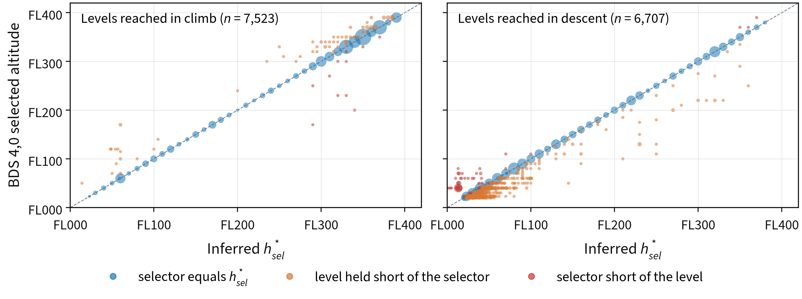
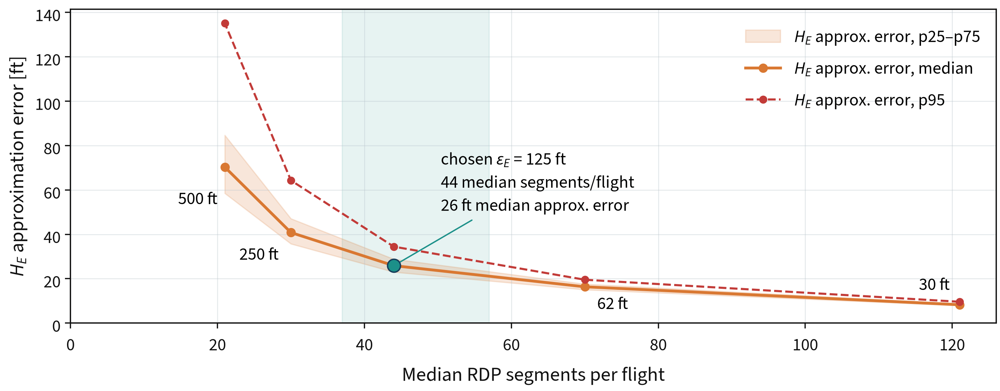
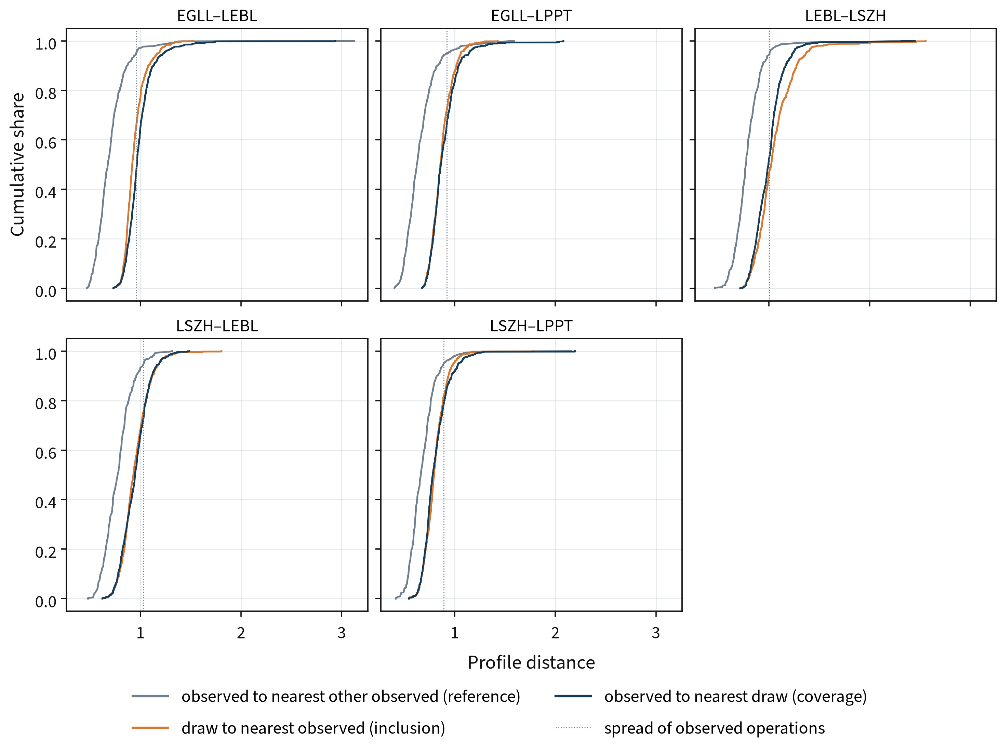
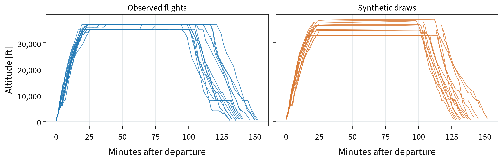

Inferred Tactical Command Sampling for Stochastic Vertical Profile Generation Using ADS-B Data
Supplementary material to the paper. Code and figure scripts are in the repository.
A. Data Cleaning and Quality Control
OpenSky may store multiple receptions of the same ADS-B message with different timestamps. Retaining these later receptions can introduce stale positions and altitudes into a reconstructed trajectory. We therefore retain only the earliest reception of each duplicated message, removing 32 % of the stored rows. Remaining altitude outliers are removed in two passes using a running median. The first uses a window of ±30 s and a threshold of 1000 ft to remove isolated spikes; the second uses ±120 s and 3000 ft to remove longer stretches of stale data. Such outliers occur in 47 % of flights, with a mean of five samples per affected flight. Since ERA5 values are interpolated before cleaning, they are retained where the cleaned position differs from the original by no more than 100 ft vertically and 1 km horizontally. Otherwise, the meteorological data are retrieved again.
Two quality checks determine which flights are retained. The flight quality check rejects trajectories containing ten or more airborne altitude jumps exceeding 3000 ft that cannot be corrected using neighbouring samples. It also rejects trajectories that descend below 1000 ft between two segments at or above FL200, indicating that two flights may have been incorrectly joined. The command quality check rejects flights with incomplete or unreliable inferred command representations. This includes flights with missing or implausible altitude targets, speed schedules that do not cover the entire airborne interval, Mode S speed observations for fewer than 20 % of airborne samples, or missing ERA5 temperature data.
| Route | Retrieved | Flight check | Command check | Final dataset | Library set | Held-out set |
|---|---|---|---|---|---|---|
| EGLL–LEBL | 1,000 | 999 | 997 | 949 | 475 | 474 |
| EGLL–LPPT | 1,000 | 999 | 961 | 908 | 454 | 454 |
| LEBL–LSZH | 1,000 | 998 | 997 | 729 | 365 | 364 |
| LSZH–LEBL | 1,000 | 998 | 996 | 789 | 395 | 394 |
| LSZH–LPPT | 1,000 | 999 | 999 | 862 | 431 | 431 |
| Overall | 5,000 | 4,993 | 4,950 | 4,237 | 2,120 | 2,117 |
B. Empirical Command Libraries
Table B.1 summarises the empirical command libraries constructed for each route. The longest command events occur on the two routes to Lisbon, with median target-reaching durations τtarget of 590 s and 562 s, respectively, and a median of eight RDP segments per event. The shortest events occur on the route from Barcelona to Zurich, with a median τtarget of 372 s and four RDP segments per event.
| Route | dGC (NM) | Flights | Events | Median τtarget (s) | Median segments |
|---|---|---|---|---|---|
| EGLL–LEBL | 619.7 | 475 | 2,090 | 444 | 7 |
| EGLL–LPPT | 844.5 | 454 | 1,833 | 590 | 8 |
| LEBL–LSZH | 462.2 | 365 | 1,964 | 372 | 4 |
| LSZH–LEBL | 462.2 | 395 | 1,742 | 459.5 | 6 |
| LSZH–LPPT | 930.4 | 431 | 1,764 | 562 | 8 |
C. Inferred Targets and the Mode S Selected Altitude
We compare the inferred altitude targets hsel* with independently decoded Mode S BDS 4,0 selected altitudes. For each plateau lasting at least 30 s, excluding the final target, we use the median reported selected altitude. The initial observed altitude is treated as a starting state, not an inferred target. Below 10000 ft, where the reported barometric setting differs from 1013 hPa, targets are converted to the corresponding altitude using ISA and rounded to 100 ft; otherwise, pressure altitudes are rounded to 500 ft. The 30 s threshold is independent of the 32 s threshold used for replay plateau closure. Across 14,230 plateaux from 4,237 flights, 90.8 % of inferred targets agree within 100 ft, increasing to 98.0 % at or above 10000 ft, compared with 74.0 % below (Figure C.1).

Disagreements are asymmetric. On 7.1 % of plateaux, the selector indicates an altitude beyond the inferred target in the direction of flight, including 1.5 % where it already indicates the next target. Conversely, the selector lies short of the inferred target on only 2.1 % of plateaux. Below 10000 ft, these proportions increase to 19.4 % and 6.6 %, respectively. Thus, disagreements predominantly reflect levels held short of the selected altitude rather than incorrectly inferred level-offs.
Figure: docs/paper/selected_altitude_crosscheck.py
D. Selection of the RDP Tolerance
Figure D.1 illustrates the trade-off between representation complexity and approximation error for five RDP tolerances ranging from 30 ft to 500 ft. Increasing the tolerance reduces the number of segments but increases the approximation error, with a marked increase in error per segment removed beyond 125 ft. We therefore selected 125 ft, reducing the median number of segments per flight from 121 to 44 while maintaining a median approximation error of 26 ft.

Figure: docs/paper/rdp_tolerance.py
E. Nearest-Neighbour Distance Distributions
Figure E.1 shows the cumulative distributions of the nearest-neighbour distances reported in the nearest-neighbour table of the paper. The observed-to-observed distances provide the reference, with their 95th percentile defining the threshold for operational inclusion and coverage. On every route, synthetic-to-observed distances are generally larger than the observed-to-observed reference. Inclusion and coverage distributions are similar on most routes, but differ more noticeably on EGLL–LEBL, where coverage is 18 percentage points lower than inclusion, and LEBL–LSZH, where coverage is 6 percentage points higher.

Figure: docs/paper/rq2_pool_fidelity.py
F. Individual Vertical Profiles
Figure F.1 compares fifteen randomly selected observed and synthetic vertical profiles on EGLL–LPPT, aligned by departure time. Both groups exhibit common cruise levels and intermediate level-offs during climb and descent, illustrating similarities in their overall vertical structure.

Figure: docs/paper/rq2_individual_profiles.py